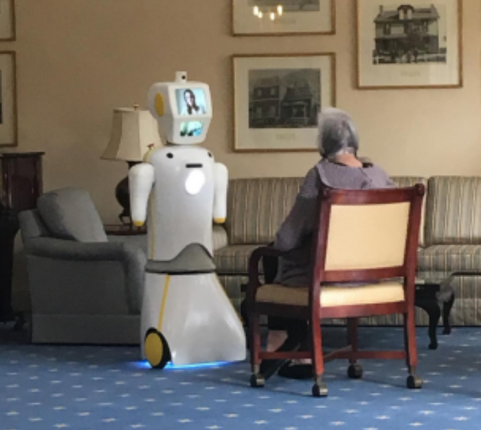

April 6, 2020
Like any complex software system, we need modules in robotics computing. Modules are distinct collections of code that encapsulate some functionality which can then be reused elsewhere. They are often characterized by coupling and cohesion: coupling being the degree of interdependence between modules, and cohesion being how well the functionality within each module is grouped together. We strive to achieve low coupling and high cohesion, but for various reasons, I think this can be particularly challenging in robotics.
The de-facto standard framework in robotics computing is Robot Operating System (ROS) and the atomic module in this framework is generally thought of as the ROS package: a collection of source files, config and launch files, build files and definition files for message serialization. Crucially, each package usually defines one (or more) programs, called nodes in ROS terminology. So we are dealing with modularity in terms of files and source code, as well as in terms of the processes themselves.
The first thing to say is that ROS does a good job of building modularity into the ecosystem from the outset; the directory structure, IPC model, build system, package manager, etc. all lend themselves to building code in a modular fashion. At its core, ROS is an IPC framework and the fact that it uses networked communication over TCP/IP builds in great flexibility. Processes can communicate with each other if they're on the same machine, separate machines on the same robot, separate machines on different robots, or even across the internet (with a lot of network configuration). Their publish-subscribe model (known as topics in ROS), as well as their Remote Procedure Call (RPC) model (known as services), also provides a great amount of flexibility. Using the IPC model they provide greatly decreases development effort, allows for swapping in and out various implementations of a function without changing the API or caller program, and allows for extending the functionality of the robot by developing new nodes that build on the existing API.
All of this modularity provides developers with a great amount of flexibility and supports a diverse range of robots — from social, to warehouse, to legged robots. For even a moderately complex ROS system, everything you need is provided out-of-the-box, but things become a little more tricky with larger codebases.
One of the unique characteristics of robotics software is that it is both very stateful and concurrent, this introduces a lot of tight coupling between modules.
We had about thirty-five different programs running concurrently on Stevie and the majority of programs had to know about the state of the others. To illustrate how easily coupling can occur between modules: we had a program on Stevie that would detect obstacles in his vicinity and having detected one, it could then instruct another program to stop the wheels, instruct the programs rendering the screen animations to produce a different facial expression, maybe another program would say something to a nearby person, the navigation program would need to know that it has been interrupted, and the list goes on. Extend this single event of an obstacle being detected to the entire scope of events that Stevie had to deal with, and you can see how quickly a tightly coupled system can be created: the states of processes quickly become intertwined and dependent on the control flow of one another, and the source code of the modules quickly become dependant on each other. Managing state and coupling between modules in robotics computing is a real challenge and you can enter spaghetti code territory very quickly.
Developing and maintaining code such that each program has access to consistent and fresh data, at the right time, with low latency and without loss in a large ROS system takes time to get right. The paradigm used in ROS, of message passing and RPCs1, requires instantiating some data structure in one program, defining how to serialise it, building and linking the two communicating programs, serialising the data structure in run-time, sending it over the air, and copying it into a data structure in memory to be used on the other side. All of this adds up to a lot of boilerplate code to develop and maintain across modules and can result in dreaded code replication. I noticed a lot of my development time went into wiring together modules in this fashion. Since I developed all of the software on the robot from scratch, I watched the codebase and the module count grow from zero to many and noticed the ripple effect take hold as the number grew. A change in one package could mean updating a few others, and changing a message definition meant setting aside half an hour or so to update all dependant modules. Unfortunately, this is the price you pay for having the advantages that ROS gives, and is hard to avoid in any codebase with modularity. But perhaps, there might be another way to do this.
How is it done on the web? Well, for most web applications, it's a completely different paradigm that really isn't comparable. For most web applications, you want many instances of the same server scaled out and as stateless as possible. But there are some applications on the web that can be more readily compared. Take video games, instant messaging, or a microservices application, for instance. These are stateful, concurrent and highly performant; and in these applications, a distributed cache is often used.
I would love to study how something like Redis could be used to manage state and communication in robotics computing. I haven't spent enough time looking into this approach or considering the pros and cons of it to really appraise its suitability, but there are some characteristics of Redis that immediately speak to its potential usage. It is in memory so it's very performant and can persist to disk if needed, in order to act as a long-term 'memory'. It is proven to be of industrial-grade and has a large and active community with client implementations in all the right languages. It can natively support complex data structures which makes serialisation easier, it can support PubSub and RPC, and it's distributed. It seems to check all the boxes we need for a robotics framework. I would love to work on this — there's probably a nice paper in it, or maybe even a new framework...
Cohesion can be tricky in robotics software, there is a vast number of functions, classes, and loops required to build a robot, and deciding which should be grouped with which is not something I came to a satisfactory conclusion about. It starts off straightforward, you can group things together using functional cohesion (the superior form of cohesion): all the code for rendering animations to the screens should be grouped together in the same module, all code for producing speech should be together, all code for driving the joint motors should be together, etc. But as you continue to layer more nuanced functionality on top of existing modules, the delineations between them becomes unclear and often ambiguous.
To illustrate this point: we had a camera built into Stevie's head that would pop up when Stevie was doing teleconferencing. The screen on the robot could display the video feed from the camera so the person can see themselves. But if the camera was lowered back into the head and the screen was not switched back to its usual face animations, you could still see the camera stream from the inside of Stevie's head. So we needed a function that would automatically switch the screens back to their normal animations when the camera was lowered so you would not see the inside of Stevie's head on the screens. The choice for where to put that function was somewhat arbitrary: it could be in the module for the screens, the cameras, the videoconferencing or a module for controlling actuators on the platform (the wheels, lights, joint motors, etc.).
Choices like this were repeated time and time again for many of the other small behaviours that had to be accounted for. For example: a function that will give verbal warnings to nearby users if the battery becomes low, or one that would react to the emergency stop being pressed, or a one that will automatically straighten the arms, hip and neck when the robot starts driving, or one that would detect the inclination of the upper body from an IMU reading and adjust the pitch of the hip to maintain an upright position — there are loads of these scattered throughout the codebase. Due to the flexibility that ROS provides, you can subscribe and publish to topics (as well as make service calls) from any process in the system. The robot will behave in the same way regardless of what program or module the function is placed in, but there are obvious ramifications for the productivity of developers who build these programs, and speed is the name of the game with robotics startups.
By the time I left, many of these smaller behaviours were grouped by coincidental or logical cohesion. It's a problem I feel I could have come to a better solution for and something I'd like to return to at a later stage. Some more reading on software engineering is required!
[1] There is also the parameter server, but that is built for configuration and not for communication so performance will suffer if you use it incorrectly. ROS also has Nodelets which are a wonderful way to cut latency and increase throughput for very tightly coupled processes — we used them for acquiring data from cameras and handing that straight over to perception algorithms.